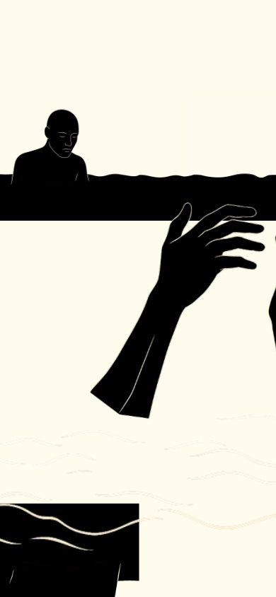
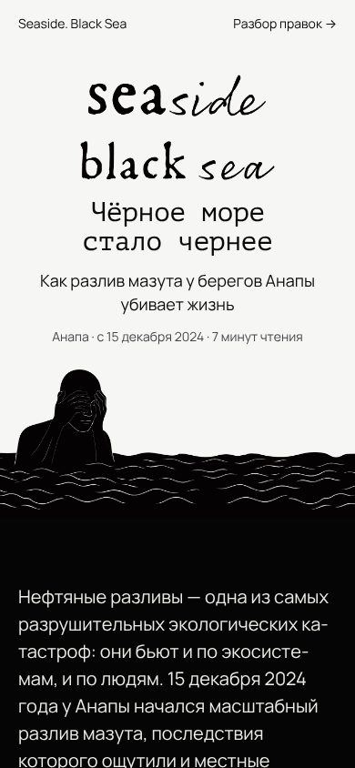
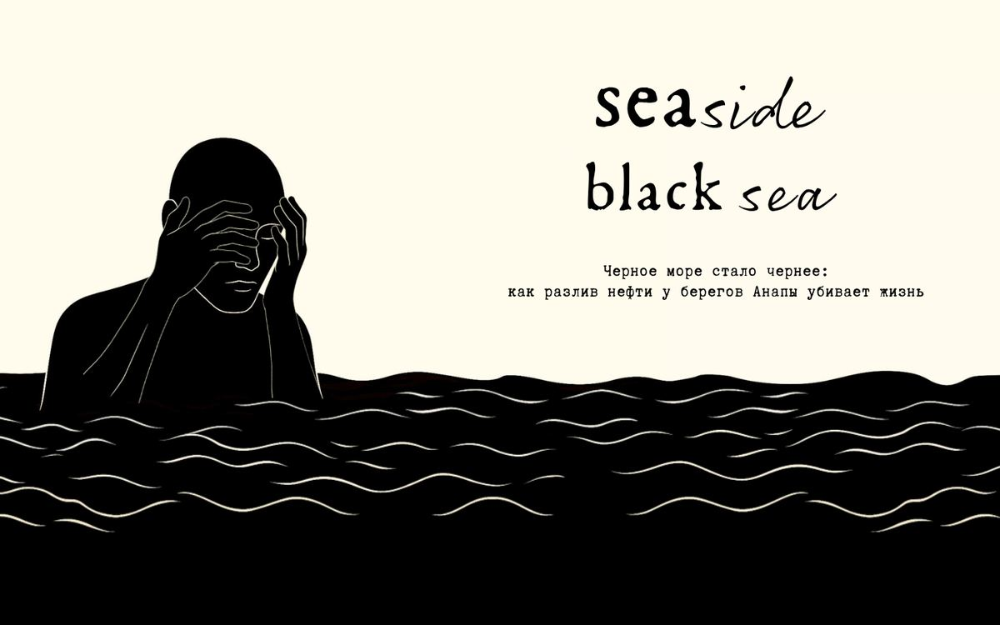
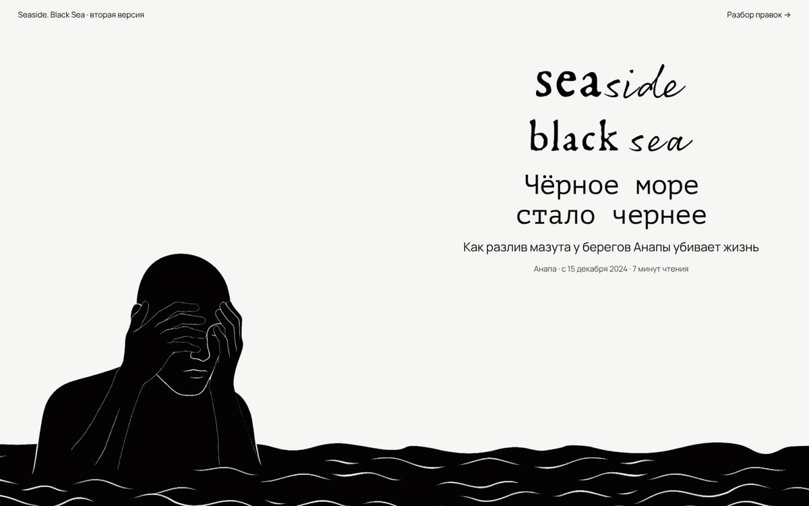
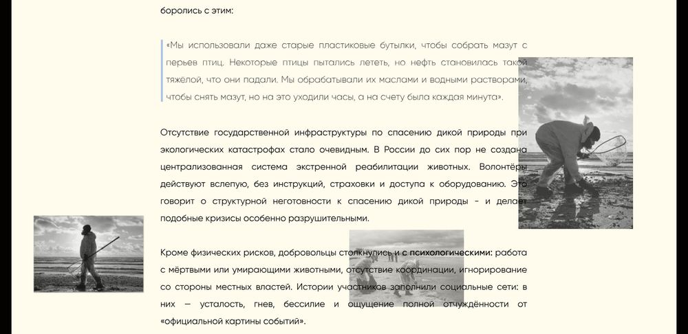

Идея сильная: море чернеет, текст лежит на листах бумаги, животные нарисованы карточками, фото раскрываются из щели. Ломает её не дизайн, а сборка в Тильде: весь текст там нарисован картинками, телефонной версии нет, страница весит 21 МБ.
Я прогнал исходник через все дизайн-скиллы проекта: taste-skill (автоматические lint и inspect в браузере на 1440, 768 и 390 px, плюс критика по скриншотам), Vercel Web Interface Guidelines (доступность, типографика, картинки, анимации), image-to-code (разбор секций по скриншотам), playwright (скриншоты). Ниже всё, что нашёл, и что сделал во второй версии.
Открыть вторую версиюВ Тильде у этого лонгрида не настроен ни один мобильный размер (в коде нет ни одной позиции для ширин 320–960). Поэтому на телефоне показывается кусок десктопного макета: заголовок не виден, текст обрезан справа. Слева исходник на ширине 390 px, справа вторая версия.


| Что | Почему | Правило |
|---|---|---|
| Текст картинками (SVG-кривые) | Его нельзя выделить, найти поиском, перевести, прочитать скринридером, и он не перестраивается под телефон. Это корень почти всех остальных проблем. | Vercel: семантический HTML, заголовки h1–h6. taste: inspect насчитал 0 слов |
| Кремовый фон #fffbed | Жёлто-кремовая бумага. Ты сама её запрещала для портфолио, и автоматическая проверка тоже её ловит. Заменил на холодную бумагу, которая темнеет от главы к главе. | taste: palette-cream, «no yellow-cream ground»; твой список «Нельзя» |
| Фото поверх текста в главе «Люди против нефти» | Снимки наезжают на абзацы и цитату, часть строк не читается. Вынес фото в отдельные полосы между абзацами. | taste: «nothing ever lies on top of a statement» |
| Руки поверх текста в финале | Линии рук перечёркивают первые строки. Отодвинул к краям, на телефоне они стоят под текстом. | то же правило |
| Выключка по ширине | Без переносов даёт «реки» пробелов: «масштабов и недостаточную». Сделал левую выключку с переносами. | taste type: «left-aligned by default» |
| Подпись над текстом «нефтяные разливы» | Мелкая серая метка над абзацем ничего не добавляет: тема уже в заголовке. | taste: «no eyebrows» |
| Голубая цифра «600» посреди абзаца | Одно случайно выделенное число читается как ссылка. Все ключевые цифры вынес в отдельную полосу. | taste: «no styled accent word» |
| Целый абзац жирным | Когда жирное всё, не выделено ничего. Сравнение 2007 и 2024 стало картинкой. | taste colour/type: акцент в одном месте |
| Серый тонкий текст цитат | Светло-серое начертание на светлом фоне теряется. Цитаты теперь полным цветом, крупнее текста, с подписью автора отдельной строкой. | taste: «running text in the full ink» |
| 26 скриптов Тильды | В выгрузке грузятся формулы KaTeX, слайдеры, формы и даже новогодние снежинки с Дедом Морозом, которых в лонгриде нет. | Vercel: performance |
| Что | Зачем | Правило |
|---|---|---|
| Заголовок h1 живым текстом и строка «Анапа · с 15 декабря 2024 · 7 минут чтения» | Первый экран сразу отвечает: про что, где, когда и сколько читать. | taste: «the first screen answers the visitor's first question in large type» |
| Полоса главных цифр: 5000 т, 90 км², 8000, 600 | Цифры были спрятаны в абзацах. Теперь масштаб виден за две секунды, а текст их объясняет. | taste: «substance», полнота вместо пустоты |
| Бумага темнеет от главы к главе | Четыре ступени тона: #f6 → #ed → #e3 → #d8. Пока читаешь, море «чернеет». Это смена цвета поля, а не украшение. | taste colour: «a section may change the whole field colour», без линий и теней |
| Сравнение 2007 и 2024 двумя пятнами | Площади пятен соотносятся как 1 к 1,5, как в твоём тексте. Цифры под ними, а не в таблице с рамками. | taste: «no thin rules», данные картинкой |
| Цифры у карточек животных | ≈8000 и 121 у птиц, 8 / 3 / 10+ у дельфинов. Карточка теперь не только картинка, но и итог главы. | taste: каждая секция несёт свой контент |
| Подписи к цитатам, источники и авторы фото в конце | Кто сказал и откуда снимок. Для журналистского текста это обязательно. | taste imagery: каждое найденное фото с подписью |
| Описания всех картинок, lang="ru", ссылка «К тексту», видимый фокус | Скринридер читает страницу, переносы и озвучка работают по-русски, по странице можно пройти клавиатурой. | Vercel: accessibility, focus states |
| Размеры у картинок, lazy-загрузка, prefers-reduced-motion | Страница не прыгает при загрузке, фото грузятся по мере прокрутки, анимация выключается у тех, кому она мешает. | Vercel: images, animation |
| Неразрывные пробелы и ёлочки | «5000 тонн», «15 декабря», предлоги не висят в конце строки. | Vercel typography |
| Правило | Что я сделал и почему |
|---|---|
| taste: «никакого моноширинного» | Оставил машинопись в заголовках и больших цифрах. Это голос твоего лонгрида: протокол, сводка, отчёт о катастрофе. Без неё страница станет обычной статьёй. Подписи и мелкий текст при этом перевёл в гротеск, чтобы машинопись не превращалась в костюм. |
| taste: «никаких 01 / 02 / 03» | Номера на карточках животных — часть иллюстрации, а не интерфейса. Оставил. |
| taste: «нужно одно живое видео» | Честного ролика с этим разливом под свободной лицензией нет, а чужая хроника без прав хуже, чем ничего. Видео не добавлял. |
| taste: «появление каждого блока с задержкой, минимум 8 движущихся элементов» | Ты просила не делать анимаций ради анимаций. Осталась одна, смысловая: раскрытие фото. |
| taste lint: «многовато длинных тире» | Правило написано под английский. В русском тире — это грамматика, а не привычка. |
Текст я слегка отредактировал (короче фразы, ё, тире, запятые), факты не трогал. Но вот что стоит сверить:


